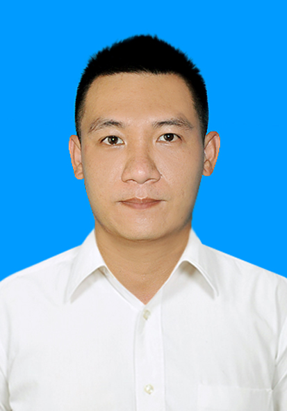

Phong Nguyen Resume

Contact Me
Summary:
I am on the path of learning and practicing to become a professional
Fullstack developer.
Education:
- Back-End Certificate(2024)
- Front-End Certificate(2023-2024)
- Cao Thang Technical College Technology(2009-2012)
Work Experience:
-
Learn & Practice FullStack At Home(2023-2024)
-
Completed multiple modules within the CyberSoft Academy Full-Stack
Developer program, mastering HTML, CSS, JavaScript, and other
front-end technologies.
-
Contributed significantly to two group projects:
-
E-Learning website: Built a responsive
e-learning website using React-JS, Sass, Tailwind-CSS, and other
modern tools, resulting in a 20% increase in user experience.
-
Movie website: Developed a responsive movie
website using React-JS and similar technologies. This project
allowed me to practice building dynamic interfaces for
showcasing information and integrating user interaction
functionalities.
-
Collaborated with teammates to complete project development within
the deadline, resulting in a 100% on-time delivery rate.
-
Bussiness staff:( Dong Nam Ba Motorcycle Co., Ltd - 2019-2023)
-
Maintaining the internal computer and network system:
-
Managed and maintained the internal computer and network system,
ensuring smooth and secure operations for 30 users.
-
Improved work efficiency by 20% by installing and configuring
Yamaha FI-Tools software and inventory management software.
-
Achievements:
-
Consistently meeting or exceeding set sales targets,
contributing to a 15% increase in revenue for the store in 2023.
-
Maintaining the position of the top-performing employee for two
consecutive years.
-
News Editor:(HK Film - 2014-2017)
-
Editing Tap Chi Dia Oc News (TodayTv):
-
Increasing viewership of real estate news by 15% within 6
months.
-
Editing Tai Chinh - Kinh Te News (TodayTv):
-
Increased viewers' awareness of economic and financial issues by
20% through targeted marketing campaigns.
-
Involvement in the Pre-production and Post-production of Music
Video “May” (outsourced - Lam Truong):
-
Achieving a 20% increase in viewership and maintaining it until
the end of the contract with the channel:
-
Attracted 20% new viewers to the program, resulting in an
enhancement of the channel’s position.
-
Credit Consultant:(ANZ Bank & Phuong Dong Bank(OCB) - 2012-2014)
-
Personal KPI Achievement:
-
Consistently meeting or exceeding set KPIs, contributing to a 5%
increase in credit revenue for the bank in 2013.
-
Maintaining an excellent position as a credit advisor in Q3
2013.
Skills:
- Project Managerment: Github.
- Language Web Front-End: HTML, CSS, JavaScript.
-
Tools: VScode, React-JS, Tailwind-CSS, Sass,
React-redux, React-router-dom, Redux-toolkit , Axios, Ant-Design, Formik
& Yup.
-
Language Web Back-End: MySQL, Express JS , Node JS.
-
Soft Skill: Solve problems, work well under pressure,
pay attention to details, be persistent and eager to learn.